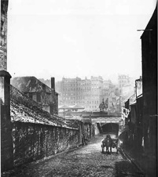
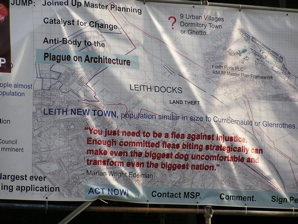

Scottish forebears

The Scots were very good at keeping their genealogical records so many branches of the family extend back a long way. The women’s families are often overlooked and it would not be appropriate to leave them all out so here we go.
Details can be found on Ancestry.com.
Edinburgh, Scotland 2008
Alexander Goodale’s Story
one that was too interesting to leave out
Alexander Goodall, a shipwright, was press ganged into service at Leith, Scotland in 1780. He left behind a wife and 9 children, she later travelled south and lived at Rochester in Kent. Alexander was in the Royal Navy for a total of 12 years. In 1783 Alexander Goodall is listed as being a "Master at Arms."
He served as ship’s carpenter on HMS Prince George and HMS Magicienne. Whilst working on board the Prince George, Alexander constructed (by royal request) a model of the vessel for the King, which was preserved in St James' Palace as late as 1845, having been seen by his son William Goodall.
On 4 June 1794 Magicienne under the command of Capt. C. Martin took part in the reduction of Port-au-Prince (now capital of Haiti, then San Domingo). During the campaign her loss to yellow fever amounted to about 70 officers and men, Alexander Goodall was one of those who died.
From Ancestry.com and submitted by Diana Martin69
He was the father of Grizel Goodale or Goodall who married William Dickson. The grandfather of Mary who married James Edgar.
Edinburgh Castle 2008
mary dickson’s forebears 1797 - 1868)
Haddington, Berwickshire
-
 William dickson
William dickson
Haddington, Berwickshire
-
grizel goodale (1780 - )
South Leith, Midlothian
-
Alexander goodale (1750 - 1794)
Leith, Midlothian
-
Grizel cunningham (1749 - )
South Leith, Midlothian
-
James Cunningham (1724 - )
North Leith, Midlothian
-
James Cunningham
-
Margaret Paterson
-
Beatrix Miller
Mary Fortune’s Forebears (1767 - 1843)
-
William Fortune (1722 - 1789)
Cranshaws, Berwickshire
-
John fortune
-
Elizabeth creak
-
William Creak
-
mary logan
Mary Roberton’s forebears (1728-1800)
-
Robert Robertson
Margaret Moyes’ forebears (1832-1907)
Edinburgh, Midlothian
-
Alexander moyes (1806-1855)
Edinburgh, Midlothian
-
John Moyse {1780 - )
Colinton, Midlothian
-
Alexander moyes (1759 - 1854)
Colinton, Midlothian
-
Alexander mois
Campsend, Newton, Midlothian
-
margaret brown
Campsend, Newton, Midlothian
-
Janet Stevenson
-
Clementina brand (1776 - )
Colinton, Midlothian
-
David brand (1752 - )
Colinton, Midlothian
-
Mary Mackenzie (1748 - )
Colinton, Midlothian
-
Gabriel Mackenzie
-
janet galloway
-
Ann Stibbings (1809 - )
Aberdeen, Scotland
-
jacob Stibbings (a gardener)
Macdowall Street, foot of Leith Wynd

Leith Wynd, Edinburgh, 1850

Poster in Leith protesting the redevelopment of the Leith Docklands 2005